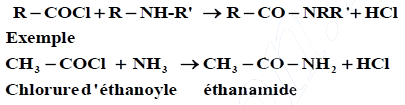

Chapitre IV : Les amides
I - Structure générale des amides
Un amide est un composé organique dérivé d'un acide carboxylique. Un amide possède un atome d'azote lié sur son groupement carbonyle. Les amides sont un groupe important dans la biochimie, parce qu'ils sont en partie responsable de la liaison peptidique entre les différents acides aminés qui forment les protéines.
II - Les classes d'amides
les amides peuvent être classées en trois familles, primaires, secondaires ou tertiaires, selon le nombre de groupement R-C=O lié à l'atome d'azote:
- Les amides primaires, de forme RCONH2, RCONHR1 ou RCONR1R2, avec un seul groupement R-C=0 lié à l'azote.
- Les amides secondaire de forme (RCO)2NH ou (RCO)2NR', avec deux groupements R-C=0 lié à l'azote.
- Les amides tertiaires, de forme (RCO)3N, avec trois groupements R-C=0 lié à l'azote.
Attention, contrairement à ce qui est parfois rencontré dans la littérature, ce classement tient en compte uniquement le nombre de groupement R-C=O liés à l'atome d'azote, et pas des éventuels groupement alkyles qui pourraient y être liés.
III - Etude des amides primaires

Les amides primaires peuvent êtres:
- non substitués à l'azote, et donc de la forme RCONH2
- monosubstitués (amides N-substitués), et donc de la forme RCONHR1
- disubstitués (amides N,N-disubstitués), et donc de la forme RCONR1R2
Nomenclature: Le nom des amides primaires non substitués est celui de l'acide carboxylique correspondant en substituant la terminaison oïque par la terminaison amide (et en enlevant le terme acide).
Exemple : propanamide.
Les amides primaires substitués sur l'atome d'azote sont nommés en faisant précéder le nom de l'amide de la lettre N suivie du nom du groupe substituant. S'il y en a plusieurs, chacun est précédé de N et ils sont énoncés dans l'ordre alphabétique.
Exemple:
IV - Obtention des amides
1. partir d'acide
La réaction entre un acide carboxylique et l'ammoniac ou une amine primaire ou secondaire est une réaction acide – base classique donnant un carboxylate d'alkyl ammonium.
Mais le sel obtenu peut subir une déshydratation par chauffage:
Exemple:
2. partir d'un chlorure d'acide:

Si HCl ne se dégage pas, il réagit avec l'amine pour donner un sel de sorte qu'il faut deux molécules d'amine pour obtenir une molécule d'amide.
Exemple:
3. partir d'un anhydride d'acide